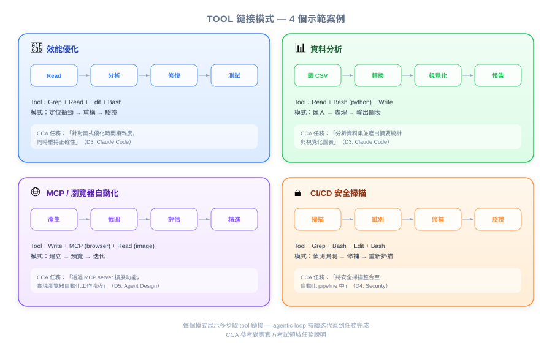
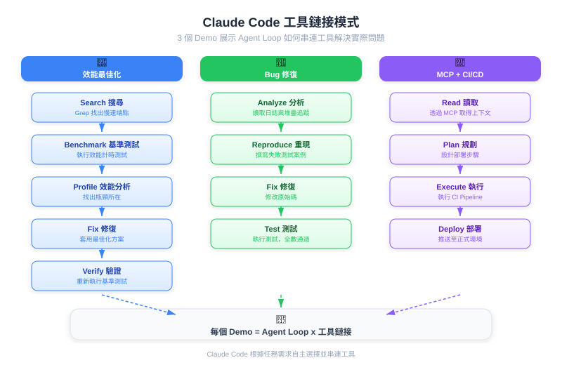
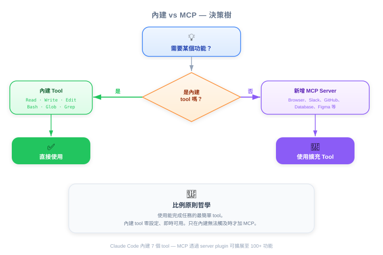

| 項目 | 細節 |
|---|---|
| 考試領域 | D2 — Tool Design & MCP Integration (18%), D3 — Claude Code Configuration & Workflows (20%) |
| 任務聲明 | 2.5 (built-in tools), 2.4 (MCP integration), 3.6 (CI/CD), 1.1 (agentic loops) |
| 來源 | claude-code-in-action / 01-intro / Lesson 04 |



Claude Code 透過自主多步驟任務執行、MCP 可擴展工具、以及 CI/CD 中的自動化品質閘門，減少工程瓶頸 — 涵蓋效能、分析、設計與合規面向。
Claude Code 預設搭載讀寫檔案、執行命令、搜尋程式碼庫的工具。PM 的關鍵洞察：大多數任務不需要額外配置特殊工具。Claude 會智慧地串連這些內建工具。
| 能力 | 商業影響 |
|---|---|
| 檔案 I/O（Read, Write, Edit） | 自主修改程式碼，無需人工逐步指導 |
| 執行（Bash） | 自動執行測試、benchmark、建置 |
| 搜尋（Grep, Glob） | 在大型程式碼庫中導航理解上下文 |
| Notebook（NotebookEdit） | 有執行能力的資料分析，而非只是程式碼生成 |
💡 PM 為何該關注
規劃 Claude Code 導入時，從內建工具開始。大多數工程任務無需額外設定成本即可涵蓋。
商業問題：效能優化需要資深工程師、耗時、且常被排到低優先級。
發生了什麼：Claude 自主對 chalk 套件（每週 4.29 億次下載）進行 profiler 分析、找到瓶頸、實作修復、驗證 3.9 倍吞吐量提升 — 步驟之間完全無需人工介入。
商業影響：
- 資深工程師時間從例行優化工作中釋放
- 效能改善主動發生，而非被動應對
- 可量化的成果（3.9 倍提升）附帶完整稽核軌跡
🎬 講師洞察
Claude 建立自己的任務清單並追蹤進度。這種自我管理能力意味著它能處理通常需要技術主管分解任務的複雜多步驟工作。
商業問題：從資料中取得洞察需要資料分析師或資料科學家。資料團隊滿載時形成瓶頸。
發生了什麼：Claude 在 Jupyter notebook 中分析影音串流平台的用戶流失資料。關鍵是，它執行自己的分析程式碼、讀取結果、並根據發現客製化後續分析。
商業影響：
- 產品團隊無需等待資料團隊即可取得初步資料洞察
- 分析品質更高，因為 Claude 根據實際結果迭代
- 減少產品決策的洞察取得時間
💡 PM 為何該關注
「寫分析程式碼」與「寫程式碼、執行、讀結果、改進」的差別，就是模板與真正洞察的差別。Claude Code 做的是後者。
商業問題：UI 樣式迭代在開發者和設計師之間產生來回。每個循環需要數小時到數天。
發生了什麼：Claude 透過 Playwright MCP 獲得瀏覽器控制工具。它開啟應用、截圖查看當前狀態、修改樣式、重新截圖驗證，反覆迭代直到結果正確。
商業影響：
- 更快的設計迭代週期（分鐘而非小時）
- 開發者可自主處理樣式微調
- MCP 擴展性意味著新能力無需重新訓練
💡 PM 為何該關注
MCP 是擴展性的故事。當利害關係人問「Claude 能做 X 嗎？」答案常常是「可以，用對的 MCP server 就行。」這是你可以納入規劃的能力。
商業問題：人工程式碼審查會遺漏跨領域的關注點，如 PII 曝露，特別是在 infrastructure-as-code 中資料流橫跨多個檔案的情況。
發生了什麼：Claude Code 在 GitHub Actions 中作為自動 PR 審查者執行。它發現一個程式碼變更會透過與外部合作夥伴共享的 S3 bucket 曝露用戶 email（PII）— 透過理解 Terraform 基礎設施流程。
商業影響：
- 合規風險在 merge 前被攔截，而非在生產環境
- 擴展審查能量無需增聘更多資深工程師
- 理解基礎設施上下文，而非只是程式碼語法
🎯 考試重點
這是 Architecture > Prompt：Claude 結構性理解基礎設施。PM 應知道 Claude Code 的 CI/CD 整合提供的是合規價值，而不只是程式碼品質。
| 問題 | 指引 |
|---|---|
| 「需要 MCP servers 嗎？」 | 先不用。只在內建工具無法覆蓋特定需求時才加（如瀏覽器測試、API 整合） |
| 「Claude Code 適合放在工作流的哪裡？」 | CI/CD 用於自動審查（Demo 4），開發者生產力用於臨時任務（Demo 1-3） |
| 「如何衡量 ROI？」 | 每任務節省時間、merge 前攔截的問題數、專家瓶頸的減少 |
| 「導入風險？」 | 內建工具低風險（無需設定）。MCP 中等（需要配置）。CI/CD 低風險（標準 GitHub Actions） |
你的工程團隊想導入 Claude Code。CTO 要求你提出分階段推行方案。根據本課的 Demo，最有效的順序是什麼？
一位注重安全的副總裁問：「如何確保 Claude Code 能攔截我們基礎設施中的 PII 曝露？」最佳回應是什麼？
你的團隊每週花 20 小時在程式碼審查上。你會如何包裝 Claude Code 的 CI/CD 整合來論證設定投資的合理性？